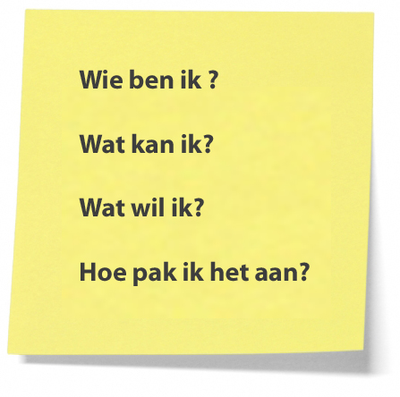

Leerdoelen
- Leren om met Excel te werken.
- Leren over bedrijfspsychologie.
- Beter worden in de vaardigheid managen.
- Onderzoeken of universiteit of hbo beter bij me past
- Oefenen met webdesign
- Spaans oefenen

Wat heb ik gedaan om dit te bereiken?
- Het boek hit=it gelezen en gemaakt.
- Het boek de ontspoorde manager gelezen.
- Het boek The lean startup gelezen
- Een onderzoek gedaan.
- Een cursus HTML&CSS.
- Serie gekeken met Spaanse ondertiteling.
Hoe is mijn gedrag veranderd ten opzichte van het begin van dit jaar?
Ik denk dat ik in dit jaar ontwikkelt ben als persoon. Ik denk dat ik volwassener ben geworden en meer weet over wie ik ben en wil zijn. Concreet werk ik harder en ben ik analytischer.
Wie heeft mij geholpen mijn doelen te behalen?
Ik ben vooral mijn docenten dankbaar, ik denk dat ik een goede relatie heb/had met al mijn docenten en zij hebben ervoor gezorgd dat ik mijn doelen haal.
Ik heb ook veel gehad aan mijn "key partners" Zoals mijn ouders en Tim Drie.